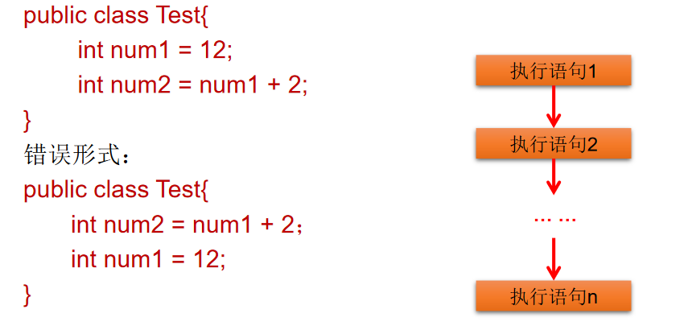
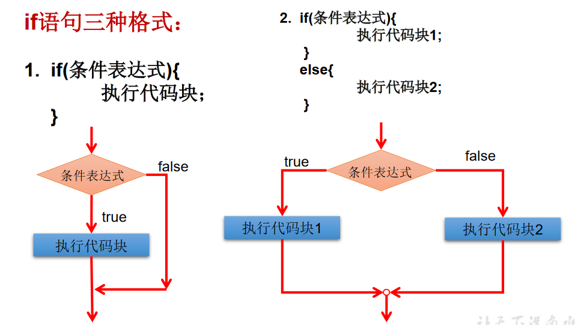
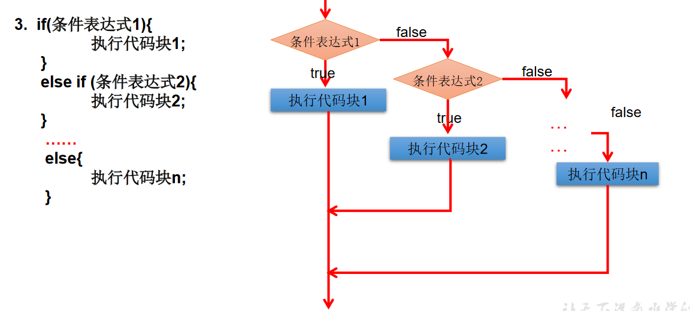
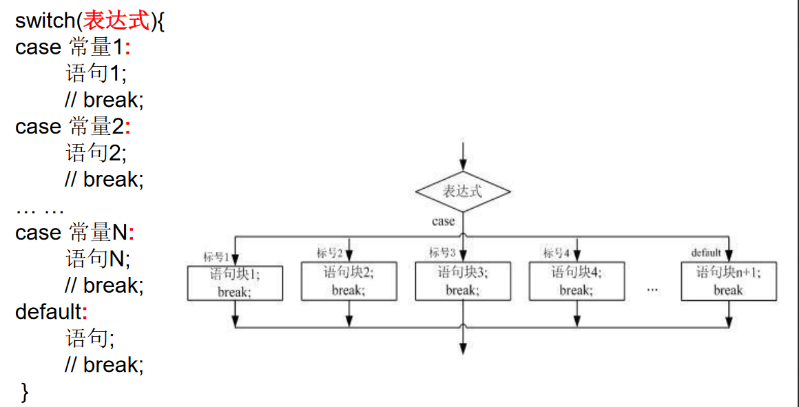
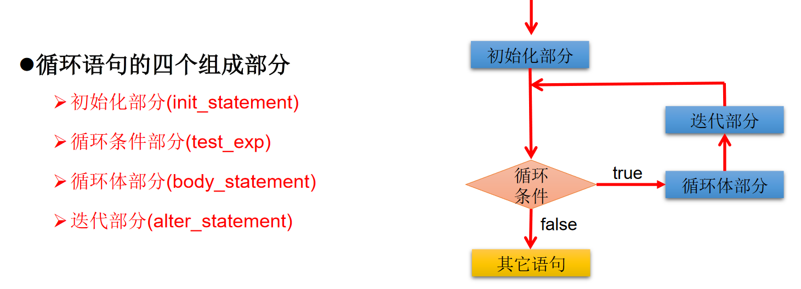
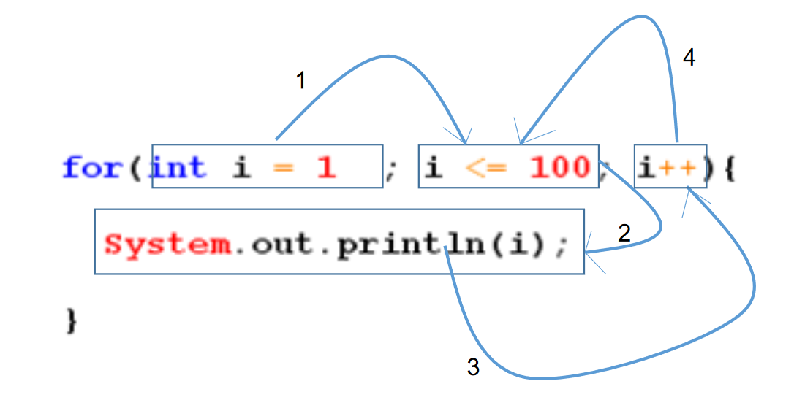

# 01、 程序流程控概述
流程控制语句是用来控制程序中各语句执行顺序的语句，可以把语句组合成能完成一定功能的小逻辑模块。
其流程控制方式采用结构化程序设计中规定的三种基本流程结构，即：
- 顺序结构
- 分支结构
- 循环结构
1、顺序结构
程序从上到下逐行地执行，中间没有任何判断和跳转。
2、分支结构
- 根据条件，选择性地执行某段代码。
- 有
if…else和switch-case两种分支语句。
3、循环结构
- 根据循环条件，重复性的执行某段代码。
- 有
while、do…while、for三种循环语句。 - 注：JDK1.5 提供了
foreach循环，方便的遍历集合、数组元素。
# 02、 顺序结构
Java 中定义成员变量时采用合法的前向引用。如：

# 03、分支语句
# 3.1、分支语句 1：if-else 结构


1、if-else 使用说明：
- 条件表达式必须是布尔表达式（关系表达式或逻辑表达式）、布尔变量；
- 语句块只有一条执行语句时，一对 {} 可以省略，但建议保留；
- if-else 语句结构，根据需要可以嵌套使用；
- 当 if-else 结构是 “多选一” 时，最后的 else 是可选的，根据需要可以省略；
- 当多个条件是 “互斥” 关系时，条件判断语句及执行语句间顺序无所谓当多个条件是 “包含” 关系时，“小上大下 / 子上父下”。
2、练习
/* | |
分支结构中的 if-else（条件判断结构） | |
一、三种结构 | |
第一种： | |
if (条件表达式){ | |
执行表达式 | |
} | |
第二种： | |
if (条件表达式){ | |
执行表达式 1 | |
} else { | |
执行表达式 2 | |
} | |
第三种： | |
if (条件表达式){ | |
执行表达式 1 | |
} else if { | |
执行表达式 2 | |
} else if (条件表达式){ | |
执行表达式 3 | |
} | |
... | |
else { | |
执行表达式 n | |
} | |
*/ | |
class IfTest{ | |
public static void main(String[] args){ | |
// 举例 1 | |
int heartBeats = 75; | |
if(heartBeats < 60 || heartBeats > 100){ | |
System.out.println("需要进一步做检查"); | |
} | |
System.out.println("检查结束"); | |
// 举例 2 | |
int age = 23; | |
if(age < 18){ | |
System.out.println("你还可以看动画片"); | |
}else{ | |
System.out.println("你可以看科技电影了"); | |
} | |
// 举例 3 | |
if(age < 0){ | |
System.out.println("你输入的数据不合适"); | |
}else if(age < 18){ | |
System.out.println("你还是个青少年"); | |
}else if(age < 35){ | |
System.out.println("你还是个青壮年"); | |
}else if(age < 60){ | |
System.out.println("你还是个中年"); | |
}else if(age < 120){ | |
System.out.println("你进入老年了"); | |
}else{ | |
System.out.println("你成仙了"); | |
} | |
} | |
} |
# 3.1.1、输入语句
/* | |
如何从键盘获取不同类型的变量，需要使用 Scanner 类 | |
具体步骤： | |
1. 导包：import java.util.Scanner; | |
2.Scanner 的实例化； | |
3. 调用 Scanner 类的相关方法，来获取指定的变量。 | |
*/ | |
import java.util.Scanner; | |
class IFTest{ | |
public static void main(String[] args){ | |
// 声明一个 Scanner | |
Scanner scan = new Scanner(System.in); | |
int num = scan.nextInt(); | |
System.out.println(num); | |
} | |
} | |
/* | |
如何从键盘获取不同类型的变量，需要使用 Scanner 类 | |
具体步骤： | |
1. 导包：import java.util.Scanner; | |
2.Scanner 的实例化； | |
3. 调用 Scanner 类的相关方法，来获取指定的变量。 | |
*/ | |
import java.util.Scanner; | |
class IFTest{ | |
public static void main(String[] args){ | |
//Scanner 实例化 | |
Scanner scan = new Scanner(System.in); | |
System.out.println("请输入你的姓名："); | |
String name = scan.next(); | |
System.out.println(name); | |
System.out.println("请输入你的年龄："); | |
int age = scan.nextInt(); | |
System.out.println(age); | |
System.out.println("请输入你的体重："); | |
double weight = scan.nextDouble(); | |
System.out.println(weight); | |
System.out.println("你是否单身？(true/false)"); | |
boolean isLive = scan.nextBoolean(); | |
System.out.println(isLive); | |
//char 型的获取，Scanner 没有提供相关方法，只能获取一个字符串 | |
System.out.println("请输入你的性别：(男/女)"); | |
String TF = scan.next(); | |
char TFChar = TF.charAt(0); | |
System.out.println(TFChar); | |
} | |
} |
1、练习 1
/* | |
岳小鹏参加 Java 考试，他和父亲岳不群达成承诺： | |
如果：成绩为 100 分时，奖励一辆 BMW； | |
成绩为 (80，99] 时，奖励一台 iphone xs max； | |
当成绩为 [60,80] 时，奖励一个 iPad； | |
其它时，什么奖励也没有。 | |
请从键盘输入岳小鹏的期末成绩，并加以判断 | |
说明： | |
1.else 结构是可选的。 | |
2. 针对于条件表达式： | |
① 如果多个条件表达式之间的关系是 “互斥” 关系 (或没有交集的关系), 哪个判断和执行语句声明在上面还是下面，无所谓； | |
② 如果多个条件表达式之间是有交集的关系，需要根据实际情况，需要考虑实际情况，考虑清楚应该将哪个结构声明在上面。 | |
③ 如果多个条件表达式之间有包含的关系，通常情况下，需要将范围小的声明在范围大的上面。否则，范围小的就没机会运行。 | |
*/ | |
import java.util.Scanner; | |
class IFTest02{ | |
public static void main(String[] args){ | |
Scanner scan = new Scanner(System.in); | |
System.out.println("请输入岳小鹏的成绩："); | |
int score = scan.nextInt(); | |
if(score == 100){ | |
System.out.println("奖励一辆BMW"); | |
}else if(score >80 && score <=99){ | |
System.out.println("奖励一台iphone xs max"); | |
}else if(score >= 60 && score <= 80){ | |
System.out.println("奖励一个iPad"); | |
}else{ | |
System.out.println("奖励？学习去！！！"); | |
} | |
} | |
} |
/* | |
岳小鹏参加 Java 考试，他和父亲岳不群达成承诺： | |
如果：成绩为 100 分时，奖励一辆 BMW； | |
成绩为 (80，99] 时，奖励一台 iphone xs max； | |
当成绩为 [60,80] 时，奖励一个 iPad； | |
其它时，什么奖励也没有。 | |
请从键盘输入岳小鹏的期末成绩，并加以判断 | |
说明： | |
1.else 结构是可选的。 | |
2. 针对于条件表达式： | |
① 如果多个条件表达式之间的关系是 “互斥” 关系 (或没有交集的关系), 哪个判断和执行语句声明在上面还是下面，无所谓； | |
② 如果多个条件表达式之间是有交集的关系，需要根据实际情况，需要考虑实际情况，考虑清楚应该将哪个结构声明在上面。 | |
③ 如果多个条件表达式之间有包含的关系，通常情况下，需要将范围小的声明在范围大的上面。否则，范围小的就没机会运行。 | |
*/ | |
import java.util.Scanner; | |
class IFTest02{ | |
public static void main(String[] args){ | |
Scanner scan = new Scanner(System.in); | |
System.out.println("请输入岳小鹏的成绩："); | |
int score = scan.nextInt(); | |
if(score == 100){ | |
System.out.println("奖励一辆BMW"); | |
}else if(score >80 && score <=99){ | |
System.out.println("奖励一台iphone xs max"); | |
}else if(score >= 60 && score <= 80){ | |
System.out.println("奖励一个iPad"); | |
}else{ | |
System.out.println("奖励？学习去！！！"); | |
} | |
} | |
} |
2、练习 2
/* | |
编写程序：由键盘输入三个整数分别存入变量 num1、num2、num3， | |
对它们进行排序 (使用 if-else if-else), 并且从小到大输出。 | |
*/ | |
import java.util.Scanner; | |
class Sorting{ | |
public static void main(String[] args){ | |
//Scanner 实例化 | |
Scanner scan = new Scanner(System.in); | |
System.out.println("请输入第一个整数："); | |
int num1 = scan.nextInt(); | |
System.out.println("请输入第二个整数："); | |
int num2 = scan.nextInt(); | |
System.out.println("请输入第三个整数："); | |
int num3 = scan.nextInt(); | |
int MaxNumber = 0; | |
if(num1 >= num2 ){ | |
if(num3 >= num1){ | |
System.out.println(num2 + "," + num1 + "," + num3); | |
}else if(num3 <= num2){ | |
System.out.println(num3 + "," + num2 + "," + num1); | |
}else{ | |
System.out.println(num2 + "," + num3 + "," + num1); | |
} | |
}else{ | |
if(num3 >= num2){ | |
System.out.println(num1 + "," + num2 + "," + num3); | |
}else if(num3 <= num1){ | |
System.out.println(num3 + "," + num1 + "," + num2); | |
}else{ | |
System.out.println(num1 + "," + num3 + "," + num2); | |
} | |
} | |
} | |
} |
3、练习 3
/* | |
我家的狗 5 岁了，5 岁的狗相当于人类多大呢？ | |
其实，狗的前两年每一年相当于人类的 10.5 岁，之后每增加一年就增加四岁。 | |
那么 5 岁的狗相当于人类多少年龄呢？应该是：10.5 + 10.5 + 4 + 4 + 4 = 33 岁。 | |
如果用户输入负数，请显示一个提示信息。 | |
*/ | |
import java.util.Scanner; | |
class DogYear{ | |
public static void main(String[] args) { | |
Scanner scan = new Scanner(System.in); | |
System.out.println("请输入狗的年龄："); | |
double Dyear = scan.nextDouble(); | |
if(Dyear <= 2 && Dyear > 0){ | |
System.out.println("狗的年龄等同于人的：" + Dyear * 10.5); | |
}else if(Dyear <= 0){ | |
System.out.println("你输入的不正确。"); | |
}else{ | |
double number = 2 * 10.5 + (Dyear - 2) * 4; | |
System.out.println("狗的年龄等同于人的：" + number); | |
} | |
} | |
} |
4、练习 4
/* | |
假设你想开发一个玩彩票的游戏，程序随机地产生一个两位数的彩票， | |
提示用户输入一个两位数，然后按照下面的规则判定用户是否能赢。 | |
1) 如果用户输入的数匹配彩票的实际顺序，奖金 10 000 美元。 | |
2) 如果用户输入的所有数字匹配彩票的所有数字，但顺序不一致，奖金 3 000 美元。 | |
3) 如果用户输入的一个数字仅满足顺序情况下匹配彩票的一个数字，奖金 1 000 美元。 | |
4) 如果用户输入的一个数字仅满足非顺序情况下匹配彩票的一个数字，奖金 500 美元。 | |
5) 如果用户输入的数字没有匹配任何一个数字，则彩票作废。 | |
提示：使用 (int)(Math.random () * 90 + 10) 产生随机数。 | |
Math.random () : [0,1) * 90 [0,90) + 10 [10,100)[10,99] | |
*/ | |
import java.util.Scanner; | |
class CaiTest{ | |
public static void main(String[] args){ | |
//1、随机产生一个两位数 | |
//System.out.println (Math.random ());// 产生 [0,1) | |
int number = (int)(Math.random()*90 + 10);// 得到 [10,99]，即 [10,100) | |
//System.out.println(number); | |
int numberShi = number/10; | |
int numberGe = number%10; | |
//2、用户输入一个两位数 | |
Scanner input = new Scanner(System.in); | |
System.out.print("请输入一个两位数："); | |
int guess = input.nextInt(); | |
int guessShi = guess/10; | |
int guessGe = guess%10; | |
if(number == guess){ | |
System.out.println("奖金10 000美元"); | |
}else if(numberShi == guessGe && numberGe == guessShi){ | |
System.out.println("奖金3 000美元"); | |
}else if(numberShi==guessShi || numberGe == guessGe){ | |
System.out.println("奖金1 000美元"); | |
}else if(numberShi==guessGe || numberGe == guessShi){ | |
System.out.println("奖金500美元"); | |
}else{ | |
System.out.println("没中奖"); | |
} | |
System.out.println("中奖号码是：" + number); | |
} | |
} |
6、练习 5
/* | |
大家都知道，男大当婚，女大当嫁。 | |
那么女方家长要嫁女儿，当然要提出一定的条件：高：180cm 以上； | |
富：财富 1 千万以上；帅：是。如果这三个条件同时满足，则：“我一定要嫁给他！！！” | |
如果三个条件有为真的情况，则：“嫁吧，比上不足，比下有余。” | |
如果三个条件都不满足，则：“不嫁！” | |
*/ | |
import java.util.Scanner; | |
class GaoFuTest{ | |
public static void main(String[] args){ | |
Scanner scan = new Scanner(System.in); | |
System.out.println("请输入你的身高：(cm)"); | |
int height = scan.nextInt(); | |
System.out.println("请输入你的财富：(千万)"); | |
double weight = scan.nextDouble(); | |
// System.out.println ("请输入你是否帅：(true/false)"); | |
// boolean isHandSome = scan.nextBoolean(); | |
// if(height >= 180 && weight >= 1 && isHandSome){ | |
// System.out.println ("我一定要嫁给他！！！"); | |
// }else if(height >= 180 || weight >= 1 || isHandSome){ | |
// System.out.println ("嫁吧，比上不足，比下有余。"); | |
// }else{ | |
// System.out.println ("不嫁！"); | |
// } | |
// 方式二 | |
System.out.println("请输入你是否帅: (是or否)"); | |
String isHandsome = scan.next(); | |
if(height >= 100 && weight >= 1 && isHandsome.equals("是")){ | |
System.out.println("我一定要嫁给他!!!"); | |
}else if(height >= 180 || weight >= 1 || isHandsome.equals("是")){ | |
System.out.println("嫁吧，比上不足，比下有余。"); | |
}else{ | |
System.out.println("不嫁！"); | |
} | |
} | |
} |
# 3.2、 分支语句 2：switch-case 结构
注意： switch 结构中的表达式，只能是如下的六种数据类型之一：
byte、short、char、int、枚举类型(JDK5.0)、String类型(JDK7.0)
不能是：long，float，double，boolean 。

/* | |
分支结构之二：switch-case | |
1. 格式 | |
switch (表达式){ | |
case 常量 1: | |
执行语句 1; | |
//break; | |
case 常量 2: | |
执行语句 2; | |
//break; | |
... | |
default: | |
执行语句 n: | |
//break; | |
} | |
2. 说明: | |
① 根据 switch 表达式中的值，依次匹配各个 case 中的常量。一旦匹配成功，进入相应 case 结构中，执行相关语句。 | |
当调用完执行语句后，则仍然继续向下执行其他 case 语句，直到遇到 break 关键字或末尾结束为止。 | |
② break, 可以使用 switch-case 结构中，表示一旦执行到此关键字，就跳出 switch-case 结构。 | |
③ switch 结构中的表达式，只能是如下的六种数据类型之一：byte、short、char、int、枚举类型 (JDK5.0)、String 类型 (JDK7.0) | |
④ case 之后之能声明常量。不能声明范围。 | |
⑤ break 关键字是可选的。 | |
⑥ default：相当于 if-else 结构中的 else。 | |
default 结构是可选的，而且位置是灵活的。 | |
*/ | |
class SwitchTest{ | |
public static void main(String[] args){ | |
int number = 2; | |
switch(number){ | |
case 0: | |
System.out.println("zero"); | |
break; | |
case 1: | |
System.out.println("one"); | |
break; | |
case 2: | |
System.out.println("twe"); | |
break; | |
case 3: | |
System.out.println("three"); | |
break; | |
default: | |
System.out.println("other"); | |
break; | |
} | |
//********************************* | |
// 运行报错，不能运行 boolean 类型 | |
/* boolean isHandSome = true; | |
switch (isHandSome){ | |
case true: | |
System.out.println ("可乐吗？？"); | |
break; | |
case false: | |
System.out.println ("薯条吗？？"); | |
break; | |
default: | |
System.out.println ("输入有误！！！"); | |
} | |
*/ | |
//********************************* | |
String season= "summer"; | |
switch(season) { | |
case"spring": | |
System.out.println("春暖花开"); | |
break; | |
case"summer": | |
System.out.println("夏日炎炎"); | |
break; | |
case"autumn": | |
System.out.println("秋高气爽"); | |
break; | |
case"winter": | |
System.out.println("冬雪皑皑"); | |
break; | |
default: | |
System.out.println("季节输入有误"); | |
break; | |
} | |
//************************************** | |
// 运行报错 | |
/* int age = 10; | |
switch (age){ | |
case age > 18: | |
System.out.println ("成年了"); | |
break; | |
default: | |
System.out.println ("未成年"); | |
} */ | |
} | |
} |
1、练习 1
/* | |
使用 switch 把小写类型的 char 型转为大写。只转换 a, b, c, d, e. 其它的输出 “other”。 | |
提示：String word = scan.next (); char c = word.charAt (0); switch (c){} | |
*/ | |
import java.util.Scanner; | |
class SwitchCaseTest1{ | |
public static void main(String[] args) { | |
Scanner scan = new Scanner(System.in); | |
String word = scan.next(); | |
char c = word.charAt(0); | |
switch(c){ | |
case 'a': | |
System.out.println("A"); | |
break; | |
case 'b': | |
System.out.println("B"); | |
break; | |
case 'c': | |
System.out.println("C"); | |
break; | |
case 'd': | |
System.out.println("D"); | |
break; | |
case 'e': | |
System.out.println("E"); | |
break; | |
default: | |
System.out.println("other"); | |
} | |
} | |
} |
2、练习 2
/* | |
对学生成绩大于 60 分的，输出 “合格”。低于 60 分的，输出 “不合格”。 | |
说明：如果 switch-case 语句中多个相同语句，可以进行合并。 | |
*/ | |
class SwitchTest1{ | |
public static void main(String[] args){ | |
int score = 78; | |
// 方案一 | |
switch(score / 10){ | |
case 0: | |
case 1: | |
case 2: | |
case 3: | |
case 4: | |
case 5: | |
System.out.println("不合格"); | |
break; | |
case 6: | |
case 7: | |
case 8: | |
case 9: | |
case 10: | |
System.out.println("合格"); | |
break; | |
} | |
// 更优的解法 | |
switch(score /60){ | |
case 0: | |
System.out.println("不及格"); | |
break; | |
case 1: | |
System.out.println("合格"); | |
break; | |
} | |
} | |
} |
3、练习 3
/* | |
根据用于指定月份，打印该月份所属的季节。 | |
3,4,5 春季 6,7,8 夏季 9,10,11 秋季 12, 1, 2 冬季 | |
*/ | |
class MonthTest{ | |
public static void main(String[] args){ | |
int month = 6; | |
switch(month){ | |
case 12: | |
case 1: | |
case 2: | |
System.out.println("冬季"); | |
break; | |
case 3: | |
case 4: | |
case 5: | |
System.out.println("春季"); | |
break; | |
case 6: | |
case 7: | |
case 8: | |
System.out.println("夏季"); | |
break; | |
case 9: | |
case 10: | |
case 11: | |
System.out.println("秋季"); | |
break; | |
} | |
} | |
} |
4、练习 4
/* | |
编写程序：从键盘上输入 2020 年的 “month” 和 “day”， | |
要求通过程序输出输入的日期为 2019 年的第几天。 | |
2 15 : 31 + 15 | |
5 7: 31 + 28 +31 +30 + 7 | |
... | |
说明：break 在 switch-case 中是可选的。 | |
*/ | |
import java.util.Scanner; | |
class DayTest{ | |
public static void main(String[] args) { | |
Scanner scan = new Scanner(System.in); | |
System.out.println("请输入2020年的month"); | |
int month = scan.nextInt(); | |
System.out.println("请输入2020年的day"); | |
int day = scan.nextInt(); | |
// 定义一个变量来保存天数 | |
int sumDays = 0; | |
switch(month){ | |
case 12: | |
sumDays += 30; | |
case 11: | |
sumDays += 31; | |
case 10: | |
sumDays += 30; | |
case 9: | |
sumDays += 31; | |
case 8: | |
sumDays += 31; | |
case 7: | |
sumDays += 30; | |
case 6: | |
sumDays += 31; | |
case 5: | |
sumDays += 30; | |
case 4: | |
sumDays += 31; | |
case 3: | |
sumDays += 29; | |
case 2: | |
sumDays += 31; | |
case 1: | |
sumDays += day; | |
} | |
System.out.println("2020年" + month + "月" + day + "日是当年的第" + sumDays + "天"); | |
} | |
} |
5、练习 5
/* | |
从键盘分别输入年、月、日，判断这一天是当年的第几天注：判断一年是否是闰年的标准： | |
1）可以被 4 整除，但不可被 100 整除或 | |
2）可以被 400 整除 | |
(year % 4 == 0 && year % 100 != 0) || year %400 == 0) | |
说明: | |
1 凡是可以使用 switch-case 的结构，都可以转换为 if-else。反之，不成立。 | |
2. 我们写分支结构时，当发现既可以使用 switch-case,〔(同时，switch 中表达式的取值情况不太多), | |
又可以使用，我们优先选择使用 switch-case。原因:switch-case 执行效率稍高。 | |
*/ | |
import java.util.Scanner; | |
class YearDayTest{ | |
public static void main(String[] args) { | |
Scanner scan = new Scanner(System.in); | |
System.out.println("请输入year"); | |
int year = scan.nextInt(); | |
System.out.println("请输入month"); | |
int month = scan.nextInt(); | |
System.out.println("请输入day"); | |
int day = scan.nextInt(); | |
// 定义一个变量来保存天数 | |
int sumDays = 0; | |
switch(month){ | |
case 12: | |
sumDays += 30; | |
case 11: | |
sumDays += 31; | |
case 10: | |
sumDays += 30; | |
case 9: | |
sumDays += 31; | |
case 8: | |
sumDays += 31; | |
case 7: | |
sumDays += 30; | |
case 6: | |
sumDays += 31; | |
case 5: | |
sumDays += 30; | |
case 4: | |
sumDays += 31; | |
case 3: | |
// 判断是否为闰年 | |
if((year % 4 == 0 && year % 100 != 0) || year %400 == 0){ | |
sumDays += 29; | |
}else{ | |
sumDays += 28; | |
} | |
case 2: | |
sumDays += 31; | |
case 1: | |
sumDays += day; | |
} | |
System.out.println(year + "年" + month + "月" + day + "日是当年的第" + sumDays + "天"); | |
} | |
} |
6、练习六
/* | |
编写一个程序，为一个给定的年份找出其对应的中国生肖。 | |
中国的生肖基于 12 年一个周期，每年用一个动物代表： | |
rat、ox、tiger、rabbit、dragon、snake、horse、sheep、monkey、rooster、dog、pig。 | |
提示：2019 年：猪 2019 % 12 == 3 | |
*/ | |
import java.util.Scanner; | |
class ZodiacSignTest{ | |
public static void main(String[] args){ | |
Scanner scan = new Scanner(System.in); | |
System.out.println("请输入年份："); | |
int year = scan.nextInt(); | |
switch (year % 12){ | |
case 1: | |
System.out.println("rooster"); | |
break; | |
case 2: | |
System.out.println("dog"); | |
break; | |
case 3: | |
System.out.println("pig"); | |
break; | |
case 4: | |
System.out.println("rat"); | |
break; | |
case 5: | |
System.out.println("ox"); | |
break; | |
case 6: | |
System.out.println("tiger"); | |
break; | |
case 7: | |
System.out.println("rabbit"); | |
break; | |
case 8: | |
System.out.println("dragon"); | |
break; | |
case 9: | |
System.out.println("snake"); | |
break; | |
case 10: | |
System.out.println("horse"); | |
break; | |
case 11: | |
System.out.println("sheep"); | |
break; | |
case 12: | |
System.out.println("monkey"); | |
break; | |
} | |
} | |
} |
# 04、循环结构
1、循环结构
在某些条件满足的情况下，反复执行特定代码的功能
2、循环语句分类
- for 循环
- while 循环
- do-while 循环

# 4.1、for 循环
语法格式 | |
for(①初始化部分;②循环条件部分;④迭代部分)｛ | |
③循环体部分; | |
｝ | |
执行过程：①-②-③-④-②-③-④-②-③-④-.....-② | |
说明： | |
②循环条件部分为boolean类型表达式，当值为false时，退出循环 | |
①初始化部分可以声明多个变量，但必须是同一个类型，用逗号分隔 | |
④可以有多个变量更新，用逗号分隔 |

/* | |
For 循环结构的使用 | |
一、循环结构的四个要素 | |
① 初始化条件 | |
② 循环条件 | |
③ 循环体 | |
④ 迭代条件 | |
二、for 循环的结构 | |
for (①;②;④){ | |
③ | |
} | |
*/ | |
class ForTest{ | |
public static void main(String[] args){ | |
for(int i=1;i <= 5 ;i++){ | |
System.out.println("Hello World!"); | |
} | |
// 练习： | |
int num = 1; | |
for(System.out.print('a');num <= 3;System.out.print('c'),num++){ | |
System.out.print('b'); | |
} | |
// 遍历 100 以内的偶数，获取所有偶数的和，输出偶数的个数 | |
int sum = 0; // 记录所有偶数的和 | |
int count = 0; | |
for(int i = 1;i <= 100;i++){ | |
if(i %2 == 0){ | |
System.out.println(i); | |
sum += i; | |
count++; | |
} | |
} | |
System.out.println("100以内的偶数的和：" + sum); | |
System.out.println("个数为：" + count); | |
} | |
} |
1、练习 1
/* | |
编写程序从 1 循环到 150，并在每行打印一个值， | |
另外在每个 3 的倍数行上打印出 “foo”, | |
在每个 5 的倍数行上打印 “biz”, | |
在每个 7 的倍数行上打印输出 “baz”。 | |
*/ | |
class ForTest1{ | |
public static void main(String[] args){ | |
for(int i = 1;i <= 150;i++ ){ | |
System.out.print(i + " "); | |
if(i % 3 == 0){ | |
System.out.print("foo "); | |
} | |
if(i % 5 == 0){ | |
System.out.print("biz "); | |
} | |
if(i % 7 == 0){ | |
System.out.print("baz "); | |
} | |
// 换行 | |
System.out.println(); | |
} | |
} | |
} |
2、练习 2
/* | |
输入两个正整数 m 和 n，求其最大公约数和最小公倍数。 | |
比如：12 和 20 的最大公约数是 4，最小公倍数是 60。说明：break 关键字的使用 | |
*/ | |
import java.util.Scanner; | |
class GnumberTest{ | |
public static void main(String[] args){ | |
Scanner scan = new Scanner(System.in); | |
System.out.println("请输入m:"); | |
int m = scan.nextInt(); | |
System.out.println("请输入n:"); | |
int n = scan.nextInt(); | |
// 获取 m 和 n 的较大值 | |
int max = (m > n) ? m : n; | |
// 获取 m 和 n 的最小值 | |
int min = (m < n) ? m : n; | |
// 求最大公约数 | |
for(int i = min;i >= 1;i--){ | |
if(m % i == 0 && n % i == 0){ | |
System.out.println("m和n的最大公约数：" + i); | |
break; | |
} | |
} | |
// 求最小公倍数 | |
for(int i = max;i <= m * n;i++){ | |
if( i % m == 0 && i % n == 0){ | |
System.out.println("m和n的最小公倍数是：" + i); | |
break; | |
} | |
} | |
} | |
} |
3、练习 3
/* | |
输出所有的水仙花数，所谓水仙花数是指一个 3 位数，其各个位上数字立方和等于其本身。 | |
例如：153 = 1*1*1 + 3*3*3 + 5*5*5 | |
*/ | |
class ForTest2{ | |
public static void main(String[] args){ | |
for(int i = 100;i <= 999;i++){ | |
int a = i / 100; // 获取百位 | |
int b = i % 100 /10; // 获取十位 | |
int c = i % 10; // 获取个位 | |
if(a*a*a + b*b*b + c*c*c == i){ | |
System.out.println("此数值为满足条件的水仙花数:" + i); | |
} | |
} | |
} | |
} |
# 4.2、while 循环
语法格式
①初始化部分 | |
while(②循环条件部分)｛ | |
③循环体部分; | |
④迭代部分; | |
} |
执行过程：①-②-③-④-②-③-④-②-③-④-…-②
说明：
- 注意不要忘记声明④迭代部分。否则，循环将不能结束，变成死循环。
- for 循环和 while 循环可以相互转换。
public class WhileLoop { | |
public static void main(String args[]) { | |
int result = 0; | |
int i= 1; | |
while(i<= 100) { | |
result += i; | |
i++; | |
} | |
System.out.println("result="+ result); | |
} | |
} |
1、练习
/* | |
While 循环结构的使用 | |
一、循环结构的四个要素 | |
① 初始化条件 | |
② 循环条件 | |
③ 循环体 | |
④ 迭代条件 | |
二、while 循环的结构 | |
①初始化部分 | |
while (②循环条件部分)｛ | |
③循环体部分； | |
④迭代部分； | |
} | |
执行过程： ① - ② - ③ - ④ - ② - ③ - ④ - ... - ② | |
说明： | |
1. 写 while 循环千万要小心不要丢了迭代条件。一旦丢了，就可能导致死循环！ | |
2. 写程序要避免死循环。 | |
3. 能用 while 循环的，可以用 for 循环，反之亦然。二者可以相互转换。 | |
区别：for 循环和 while 循环的初始化条件部分的作用范围不同。 | |
算法：有限性。 | |
*/ | |
class WhileTest{ | |
public static void main(String[] args){ | |
// 遍历 100 以内的所有偶数 | |
int i = 1; | |
while(i <= 100){ | |
if(i % 2 == 0){ | |
System.out.println(i); | |
} | |
i++; | |
} | |
} | |
} |
# 4.3、do-while 循环
do-while循环结构的使用 | |
一、循环结构的四个要素 | |
① 初始化条件 | |
② 循环条件 --->是boolean类型 | |
③ 循环体 | |
④ 迭代条件 | |
二、do-while循环的结构 | |
① | |
do{ | |
③; | |
④; | |
}while(②); | |
执行过程：① - ③ - ④ - ② - ① - ③ - ④ - ... - ② | |
说明：do-while循环至少执行一次循环体。 |
1、练习 1
class DoWhileTest{ | |
public static void main(String[] args){ | |
// 遍历 100 以内的所有偶数，并计算所有偶数的和和偶数的个数 | |
int number = 1; | |
int sum = 0; // 记录总和 | |
int count = 0; // 记录个数 | |
do{ | |
if(number % 2 == 0){ | |
System.out.println(number); | |
sum += number; | |
count++; | |
} | |
number++; | |
}while(number <= 100); | |
System.out.println("总和为：" + sum); | |
System.out.println("个数为：" + count); | |
//********************************* | |
int numb = 10; | |
while(numb > 10){ | |
System.out.println("hello:while"); | |
numb--; | |
} | |
int numb2 = 10; | |
do{ | |
System.out.println("hello：do-while"); | |
numb2--; | |
}while(numb2 > 10); | |
} | |
} |
2、练习 2
/* | |
从键盘读入个数不确定的整数，并判断读入的正数和负数的个数，输入为 0 时结束程序。 | |
说明： | |
1. 不在循环条件部分限制次数的结构：while (true) , for (true) | |
2. 结束循环的几种方式： | |
方式一：循环条件部分返回 false; | |
方式二：在循环体中，执行 break; | |
*/ | |
import java.util.Scanner; | |
class XunTest{ | |
public static void main(String[] args) { | |
Scanner scan = new Scanner(System.in); | |
int Positive = 0; // 正数个数 | |
int Negative = 0; // 负数个数 | |
while(true){ | |
int number = scan.nextInt(); | |
if(number > 0){ | |
Positive++; | |
}else if(number < 0){ | |
Negative++; | |
}else{ | |
// 一旦执行，跳出循环。 | |
break; | |
} | |
} | |
System.out.println("正数的个数：" + Positive); | |
System.out.println("负数的个数：" + Negative); | |
} | |
} |
# 4.4、嵌套循环结构
1、嵌套循环 (多重循环)
- 将一个循环放在另一个循环体内，就形成了嵌套循环。其中，for ,while ,do…while 均可以作为外层循环或内层循环。
- 实质上，嵌套循环就是把内层循环当成外层循环的循环体。当只有内层循环的循环条件为 false 时，才会完全跳出内层循环，才可结束外层的当次循环，开始下一次的循环。
- 设外层循环次数为 m 次，内层为 n 次，则内层循环体实际上需要执行 m*n 次。
2、例题：
- 九九乘法表
- 100 以内的所有质数
3、练习 1
/* | |
嵌套循环的使用 | |
1. 嵌套循环：将一个循环结构 A 声明在另一个循环结构 B 的循环体中，就构成了嵌套循环 | |
2. | |
外层循环：循环结构 B | |
内层循环：循环结构 A | |
3. 说明 | |
① 内层循环遍历一遍，只相当于外层循环循环体执行了一次 | |
② 假设外层循环需要执行 m 次，内层循环需要执行 n 次。此时内层循环的循环体一共执行了 m * n 次 | |
4. 技巧 | |
外层循环控制行数，内层循环控制列数 | |
*/ | |
class ForForTest{ | |
public static void main(String[] args) { | |
//****** | |
for(int i = 1;i <= 6;i++){ | |
System.out.print("*"); | |
} | |
System.out.println();// 换行 | |
/* | |
****** | |
****** | |
****** | |
****** | |
*/ | |
for(int i = 1;i <= 4;i++){ | |
for(int j = 1;j <= 6;j++){ | |
System.out.print('*'); | |
} | |
System.out.println(); // 换行 | |
} | |
/* | |
* | |
** | |
*** | |
**** | |
***** | |
*/ | |
for(int i = 1;i <= 5;i++){ // 控制行数 | |
for(int j = 1;j <= i;j++){ // 控制列数 | |
System.out.print("*"); | |
} | |
System.out.println(); | |
} | |
/* | |
***** | |
**** | |
*** | |
** | |
* | |
*/ | |
for(int i = 1;i <= 6;i++){ | |
for(int j = 1;j <= 6-i;j++){ | |
System.out.print("*"); | |
} | |
System.out.println(); | |
} | |
/* | |
* | |
** | |
*** | |
**** | |
***** | |
**** | |
*** | |
** | |
* | |
*/ | |
for(int i = 1;i <= 5;i++){ | |
for(int j = 1;j <= i;j++){ | |
System.out.print("*"); | |
} | |
System.out.println(); | |
} | |
for(int i = 1;i <= 5;i++){ | |
for(int j = 1;j <= 5-i;j++){ | |
System.out.print("*"); | |
} | |
System.out.println(); | |
} | |
// 九九乘法表 | |
for(int i = 1;i <= 9;i++){ | |
for(int j = 1;j <= i;j++){ | |
System.out.print(i + "*" + j + "=" + i*j + " "); | |
} | |
System.out.println(); // 换行 | |
} | |
} | |
} |
练习 2
/* | |
100 以内的所有质数 | |
质数：素数，只能被 1 和它本身整除的自然数。 | |
最小的质数是：2 | |
*/ | |
class PrimeNuberTest{ | |
public static void main(String[] args){ | |
boolean isFlag = true; // 标识是否被除尽，一旦除尽，修改其值。 | |
for(int i = 2;i <= 100;i++){ // 遍历 100 以内的自然数 | |
for(int j =2;j < i;j++){ //j: 被 i 去除 | |
if(i % j == 0){ //i 被 j 除尽 | |
isFlag = false; | |
} | |
} | |
if(isFlag == true){ | |
System.out.println(i); | |
} | |
// 重置 isFlag | |
isFlag = true; | |
} | |
} | |
} |
练习 2 的优化
/* | |
100000 以内的所有质数 | |
质数：素数，只能被 1 和它本身整除的自然数。 | |
最小的质数是：2 | |
*/ | |
class PrimeNuberTest{ | |
public static void main(String[] args){ | |
boolean isFlag = true; // 标识是否被除尽，一旦除尽，修改其值。 | |
int count = 0; // 记录质数的个数 | |
// 获取当前时间举例 1970-01-01 00:00:00 的毫秒数 | |
long start = System.currentTimeMillis(); | |
for(int i = 2;i <= 100000;i++){ // 遍历 100 以内的自然数 | |
// 优化 2：对本身是质数的自然数有效 5447---> 11 | |
// for (int j =2;j < i;j++){ //j: 被 i 去除 | |
for(int j =2;j <= Math.sqrt(i);j++){ //j: 被 i 去除 | |
if(i % j == 0){ //i 被 j 除尽 | |
isFlag = false; | |
break; // 优化一：只对本身非质数的自然数是有效的。 | |
} | |
} | |
if(isFlag == true){ | |
// System.out.println(i); | |
count++; | |
} | |
// 重置 isFlag | |
isFlag = true; | |
} | |
// 获取当前时间举例 1970-01-01 00:00:00 的毫秒数 | |
long end = System.currentTimeMillis(); | |
System.out.println("质数的个数:" + count); | |
System.out.println("所花费的时间为:" + (end - start)); //16843 --> 5447 优化一 | |
} | |
} |
# 4.5、break、continue 的使用
1、break 的使用
- break 语句用于终止某个语句块的执行
{ | |
...... | |
break; | |
...... | |
} |
- break 语句出现在多层嵌套的语句块中时，可以通过标签指明要终止的是哪一层语句块
label1: { ...... | |
label2: { ...... | |
label3: { ...... | |
break label2; | |
...... | |
} | |
} | |
} |
2、continue 的使用
- continue 语句
- continue 只能使用在循环结构中
- continue 语句用于跳过其所在循环语句块的一次执行，继续下一次循环
- continue 语句出现在多层嵌套的循环语句体中时，可以通过标签指明要跳过的是哪一层循环
3、return 的使用
- return：并非专门用于结束循环的，它的功能是结束一个方法。当一个方法执行到一个 return 语句时，这个方法将被结束。
- 与 break 和 continue 不同的是，return 直接结束整个方法，不管这个 return 处于多少层循环之内。
4、特殊流程控制语句说明
- break 只能用于 switch 语句和循环语句中。
- continue 只能用于循环语句中。
- 二者功能类似，但 continue 是终止本次循环，break 是终止本层循环。
- break、continue 之后不能有其他的语句，因为程序永远不会执行其后的语句。
- 标号语句必须紧接在循环的头部。标号语句不能用在非循环语句的前面。
- 很多语言都有 goto 语句，goto 语句可以随意将控制转移到程序中的任意一条语句上，然后执行它。但使程序容易出错。Java 中的 break 和 continue 是不同于 goto 的。
5、练习 1
/* | |
break 和 countinue 关键字的使用 | |
使用范围 循环中使用的作用 (不同点) 相同点 | |
break: switch-case 结束当前循环 关键字后面不能声明执行语句 | |
循环结构中 | |
countinue: 循环结构中 结束当次循环 关键字后面不能声明执行语句 | |
*/ | |
class BreakContinueTest{ | |
public static void main(String[] args){ | |
for(int i = 1;i <= 10;i++){ | |
if(i % 4 == 0){ | |
// break; //1、2、3 | |
continue; //1、2、3、5、6、7、9、10 | |
// System.out.println ("该吃饭了！！！"); | |
} | |
// System.out.println(i); | |
} | |
//******************************** | |
for(int i = 1;i <= 4;i++){ | |
for(int j = 1;j <= 10; j++){ | |
if(i % 4 == 0){ | |
// break; // 默认跳出包裹此关键字最近的一层的循环 | |
continue; | |
} | |
System.out.print(j); | |
} | |
System.out.println(); | |
} | |
} | |
} |